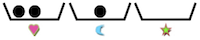
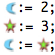
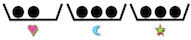
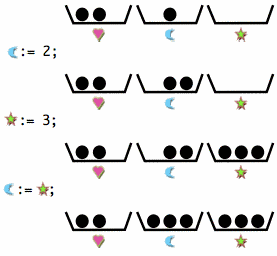
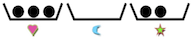
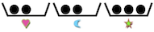
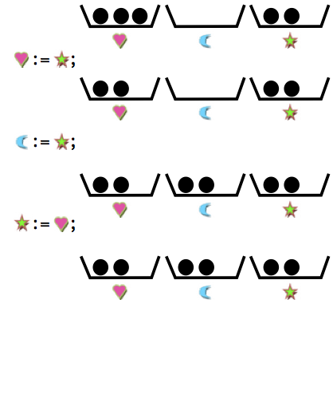
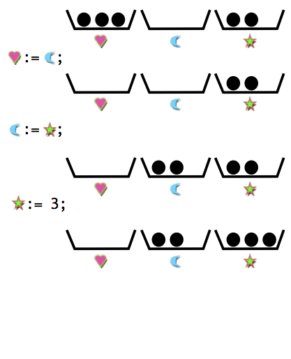
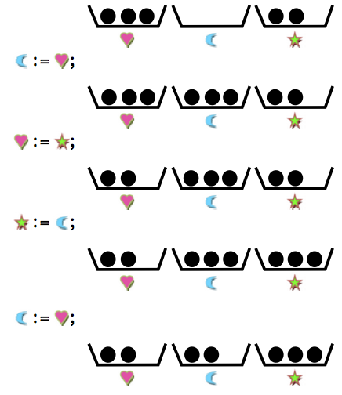
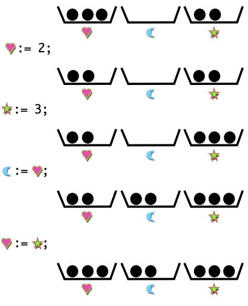

On a trois boîtes marquées respectivement par les symboles , et , chacune pouvant contenir des billes.
Voici des exemples d'actions possibles :
| := 0; | signifie : retirer toutes les billes de la boîte marquée du symbole |
| := 3; | signifie : changer le nombre de billes de la boîte marquée du symbole pour qu'elle en contienne exactement 3. |
| := ; | signifie : changer le nombre de billes de la boîte marquée du symbole pour qu'elle en contienne exactement autant que la boîte marquée d'un . |
Par exemple, si on part de la situation de gauche suivante et qu'on effectue la suite d'opérations au centre, on obtient la situation à droite.
| Situation initiale | Les opérations | Situation finale |
|  |  |  |
|  |
Dans l'exemple suivant, laquelle de ces suites d'opérations permet de passer de la situation de gauche à la situation de droite ?
| Situation initiale | Les opérations | Situation finale |
|  | ? |  |
La bonne réponse est la C.
Voici les situations intermédiaires associées aux différents programmes :
| A | B | C | D |
|  |  |  |  |
Cet exercice de programmation met en évidence la notion d'affectation de variable. Un programme manipule généralement des variables qui comme les boîtes de cet exercice peuvent être modifiées avec des instructions. Le programme C solution comporte 4 instructions organisées en séquence. Les opérations sont exécutées les unes après les autres. On parle d'affectation séquentielle. Même si ce type d'affectation est présente dans la plupart des langages de programmation, certains langages proposent des procédés différents comme l'affectation en parallèle. Avec un tel procédé, les boîtes sont toutes modifiées en même temps.